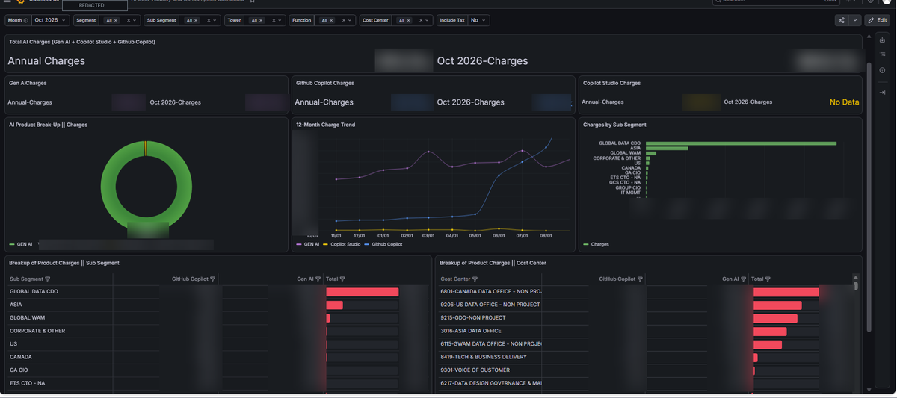
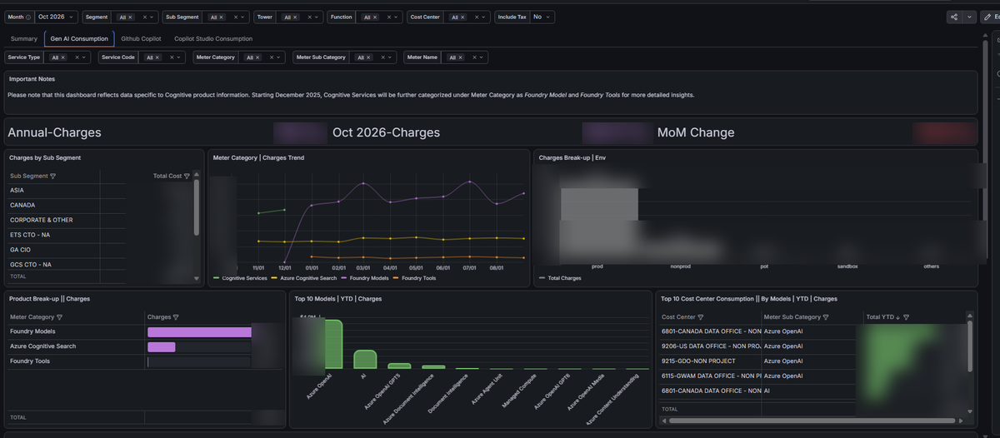
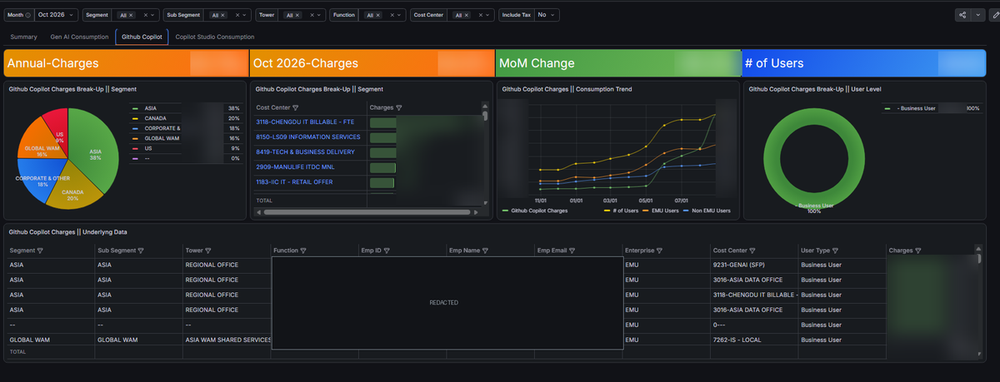
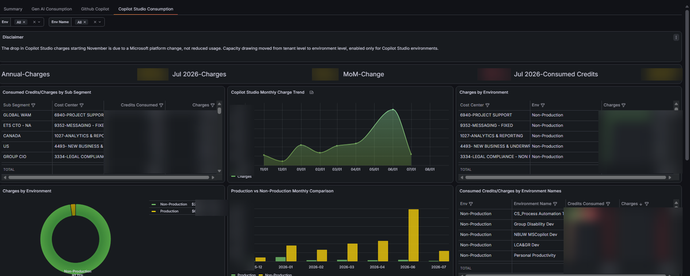

Grafana · PostgreSQL · Azure Data Factory · FinOps
Three AI Products, Three Billing Models, One Dashboard
What it actually takes to put Gen AI, GitHub Copilot and Copilot Studio spend into a single cost-centre view — and why most of the work happens long before the first panel is drawn.
Cloud cost visibility is a solved problem. You take the billing export, resolve each resource to an owner, aggregate up a hierarchy, and publish. I had already built exactly that for Azure Cost Management: Azure Data Factory for orchestration, Python for every transformation, PostgreSQL to serve, Grafana to render.
So when the ask came to do the same for AI spend, it looked like a port. It was not.
The reason is that “AI spend” is not one thing. It arrived from three Microsoft products that are billed on three fundamentally different models, and none of them agreed on what a cost centre was.
Three products that refuse to be added together
| Product | Billing model | Why it resists consolidation |
|---|---|---|
| Gen AI / Azure OpenAI | Consumption — meter × resource × day | Priced per meter category and sub-category. Subscription tags are inconsistent, and Microsoft split Foundry Models and Foundry Tools out of Cognitive Services part-way through the year, breaking the category history. |
| GitHub Copilot | Per-seat licence × month | Not a meter at all. A seat has no resource, no tag and no subscription — it has a person. Reaching a cost centre means joining to HR data, and seat counts churn monthly. |
| Copilot Studio | Consumed credits × environment | Billed in credits, not currency. And mid-year Microsoft moved capacity drawing from tenant level to environment level, which broke the comparability of the whole series. |
Read those three rows again and the engineering problem becomes obvious. There is no shared key. A meter record, a licensed user and an environment credit draw have nothing in common that you can join on. Each one needs its own independent route to the same destination.
The temptation to solve this in the dashboard
The fast path is to write three sets of panel queries, each with its own joins and conversions, and let Grafana reconcile at render time. It demos well and it is the wrong answer. Logic that lives in a panel cannot be unit-tested, cannot be reconciled against an invoice, and cannot be reused by the next consumer of the data. You also discover, the first time finance challenges a number, that you have no way to explain how it was derived.
The principle I carried over from the Azure build
Allocate once, in the transformation layer, and make the dashboard a thin read over an already-reconciled table. If a number is wrong, there is exactly one place to look.
The pipeline
| Stage | What happens |
|---|---|
| 1 · Ingest | ADF pipelines land the three raw exports on a schedule, each into its own staging area with the run date attached. No transformation here — staging stays faithful to the source. |
| 2 · Transform (Python) | Per-source Python modules normalise currency and dates, map meters to product and meter sub-category, convert Copilot Studio credits into charges, and resolve every record to a cost centre. Tax is computed as a separate column rather than baked in, so it can be toggled at query time. |
| 3 · Allocate | Resolved records fold into the same segment / sub-segment / tower / function hierarchy the rest of the cloud estate already uses, so AI spend aggregates consistently with everything else. |
| 4 · Serve (PostgreSQL) | Monthly fact tables plus narrow dimensions, indexed on exactly the columns the dashboard filters on. |
| 5 · Visualise (Grafana) | One dashboard, four tabs, driven entirely by template variables. |
Why cost-centre resolution is a waterfall, not a join
This is the part that carries the most business risk, so it is deliberately boring and explicit. Resolution runs as an ordered sequence: an explicit finance override first, then a validated resource tag, then inventory and parent mappings, then history, and finally a regional default. The first rule that matches wins.
Critically, every record stores which rule resolved it. When someone disputes an allocation — and they will — the answer is a lookup, not an investigation. A chargeback model that cannot explain itself does not survive its first finance review.
The dashboard
Four tabs behind a single filter bar. The Summary tab answers what are we spending in total, and who is spending it. The three product tabs answer why.

Three decisions in that one screen
- Annual and current-month side by side on every stat panel. A single number invites the follow-up question “is that a lot?” Showing both answers it in place.
- Include Tax is a toggle, not a second dashboard. Finance reconciles with tax; engineering compares without it. Pre-computing both in the fact table turns a political argument into a filter.
- Product split up front. Gen AI dominates. Surfacing that share immediately stops teams spending a quarter optimising the product that accounts for under one percent of spend.

The environment split is the panel that actually changes behaviour. Non-production and sandbox spend on generative models is where unreviewed experimentation quietly accumulates. Separating it from production turns one large, undiscussable number into a specific conversation about which workloads genuinely need a frontier model and which are running one because it was the default in a tutorial.

A licence is not a meter
Because Copilot is billed per seat, total cost is the wrong headline metric — cost per active user is the right one. Plotting charges against user counts on a shared time axis makes the two forces separable:
- Charges rising while seat count is flat → a price change, not an adoption story.
- Charges flat while seat count falls → unreclaimed licences. Pure waste.
- Both rising together → genuine adoption, and the only case worth celebrating.
The user-level table exists for one operational reason: a cost-centre owner needs to be able to identify dormant seats and reclaim them. An aggregate cannot do that.

The discontinuity problem
Look at the trend: charges collapse from November. Nothing improved. Microsoft moved Copilot Studio capacity drawing from tenant level to environment level — a platform change, not reduced usage.
Explain the break where it is seen
A trend discontinuity that is not explained directly above the chart will be mis-read as a saving, and sooner or later somebody will claim credit for it in a steering deck. I put the disclaimer in a panel, not in documentation nobody opens. The same applies to the Foundry re-categorisation on the Gen AI tab.
What changed
| Before | After |
|---|---|
| Three exports reconciled by hand in spreadsheets, monthly. | One scheduled pipeline; the dashboard is current without manual effort. |
| AI spend invisible below segment level. | Every charge resolves to a cost centre, with the resolving rule recorded. |
| Copilot Studio reported in credits, not currency. | Converted in the transformation layer; all three products sum into one number. |
| “Why did this change?” answered over email. | Platform discontinuities documented in-panel, next to the trend. |
| Finance and engineering worked from different extracts. | One dashboard; the Include Tax toggle serves both. |
What I would build next
- Unit economics. Cost per active Copilot seat, and cost per 1K tokens by model, so efficiency is trackable independently of volume. Right now a 20% cost rise and a 20% usage rise look identical.
- Budget thresholds. Grafana alerting on cost-centre spend against plan, rather than depending on somebody remembering to open a dashboard.
- Anomaly detection. Port the model already running against general cloud spend onto the AI fact tables. The Gen AI series is volatile enough to justify it.
- Forecast overlay. Project month-end spend from partial-month consumption — which is the question finance actually asks on the 12th, not the 1st.
The transferable lesson
The dashboard is the smallest part of this project. Four tabs of Grafana panels is perhaps a fifth of the effort. The other four fifths is the unglamorous work of making three incompatible billing models agree on a single business hierarchy, and doing it in a way that can be tested and explained.
If your cost dashboard cannot tell you why a number is what it is, it is a reporting tool, not a chargeback system. The difference only shows up when somebody disagrees with the number — and somebody always does.
Note on the screenshots. All images are redacted for publication. Employee names, email addresses and employee IDs are permanently removed, and absolute financial values are obscured. Panel layout, chart structure and dashboard design are unchanged. Figures shown are illustrative and are not representative of any organisation’s actual AI expenditure.